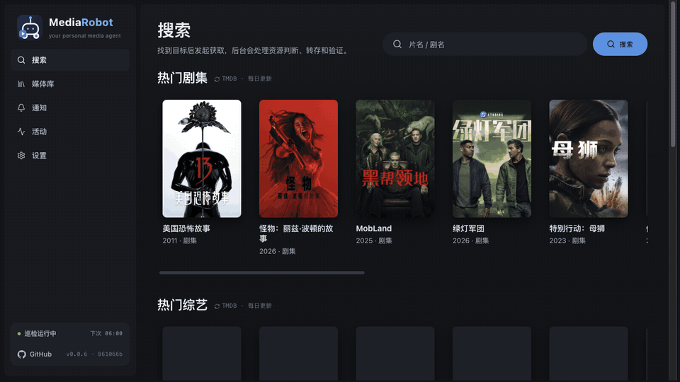
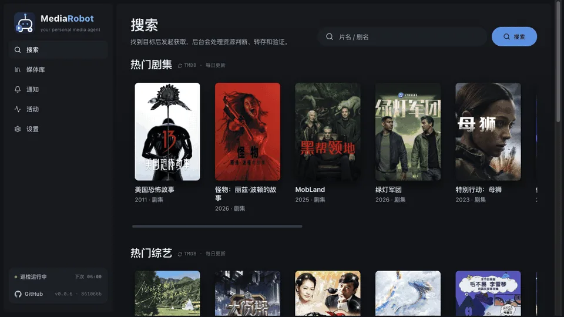
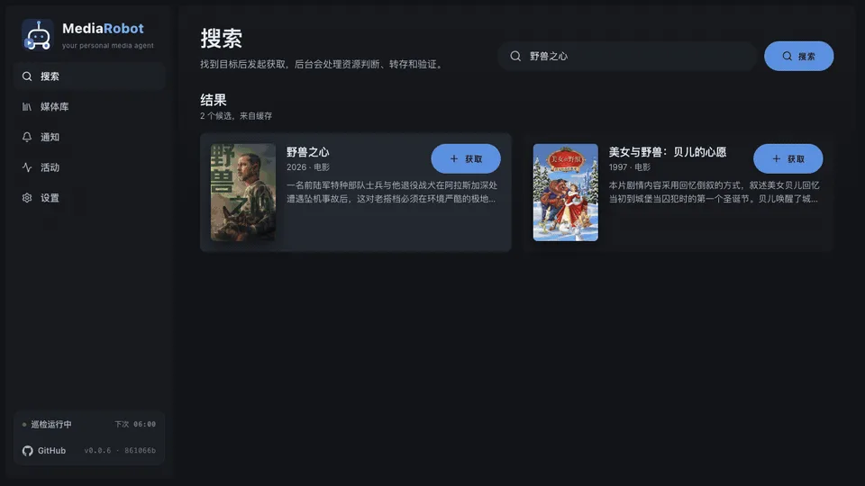
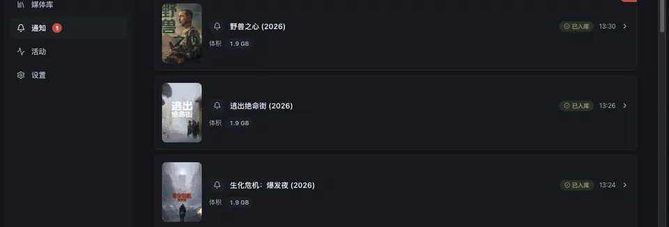

转存前先看落点
动手之前先读你的入库目录。这部片已经在库里，就不会重复获取一遍。
自部署 · 不是一个托管服务
说一个片名，它跨资源源检索，把最合适的转存进你自己的网盘， 然后回读网盘里的真实文件做验证，按 TMDB 规范命名归位。 剧集还会持续盯着缺哪几集，定时巡检只补缺口。
0BSD 开源 Docker / 飞牛 fnOS 凭证只在你自己的实例里
真实界面录屏：从首页的最近热门点进去 → 点「获取」→ 转存 → 去通知页看到这条「已入库」。

和「搜索 + 转存」脚本的差别，主要在后半段。
动手之前先读你的入库目录。这部片已经在库里，就不会重复获取一遍。
「转存成功」不等于文件真的落好了。它会重新列网盘里的真实文件和体积， 对照预期核对，确认落盘才标记已入库 —— 不确认就不算成功。
一本剧按季记账，每季记着还缺哪几集。补的时候只找缺的那几集，不用把整部剧重新搜一遍。
可以设每天几个时间点。巡检只关心仍有缺口的剧，回来的结果进通知页当日报读。
夸克 / 115 / 光鸭 / 123 / 天翼。多块盘可以同时接，侧栏随时切换当前工作区，各自的库互不干扰。
每一步的证据都摊在活动页上：搜到什么、为什么选它、转存了几次、验证结论是什么。
下面三张都是本项目的实际截图，不是设计稿。



配好三样东西就能用：TMDB → AI → 一块网盘。
片名、季集数、上映状态都靠它。必须自己申请 —— 代码里没有任何内置 key，也没有环境变量兜底。填在「设置 → 资源与服务」。
资源文件名里有一堆歧义（多季打包、简繁混杂、同名异作）。填任意 OpenAI 兼容端点的地址、key、模型名，点「测试连接」验证。
转存落在哪块盘。连一块就能跑；之后想加盘随时加，多块盘是一等工作区。
剩下的交给后台：检索 → 核对落点 → 转存 → 回读验证 → 入库。过程去活动页看。
git clone https://github.com/CodeByZack/mediarobot
cd mediary-scout
cp .env.example .env
docker compose --project-directory . -f deploy/docker/docker-compose.yml up -d起来后打开 http://<主机>:3000。
这部分不是免责声明，是选型信息 —— 先看清边界，再决定要不要装。
只会做你自己手动也能做的转存和改名整理，每一步都在活动页留痕可查。网盘凭证只存在你自己实例的数据库里。
一台能跑 Docker 的常开设备（或一台飞牛 NAS）、一个自己申请的 TMDB read token、一个 OpenAI 兼容的 LLM 端点，以及一块受支持的网盘账号。
夸克、115、光鸭云盘、123网盘、天翼云盘。各盘转存能力不同：光鸭只能磁力 / 离线下载，115 和 123 支持原生离线下载。多块盘可以同时接，侧栏切换工作区。
软件本身 0BSD 开源免费。你要自己承担的三项：TMDB key 免费、LLM 按量计费（一次干净的获取通常 0–2 次调用）、以及网盘会员费 —— 115 / 夸克通常需要会员，123 / 天翼免费账号也能转存。
资源池来自 PanSou（可选再接 Prowlarr），池子里没人分享就真的没有。这时它会如实报「暂无资源」并继续尝试，不会伪造成功、也不会塞一个不相干的文件进去。